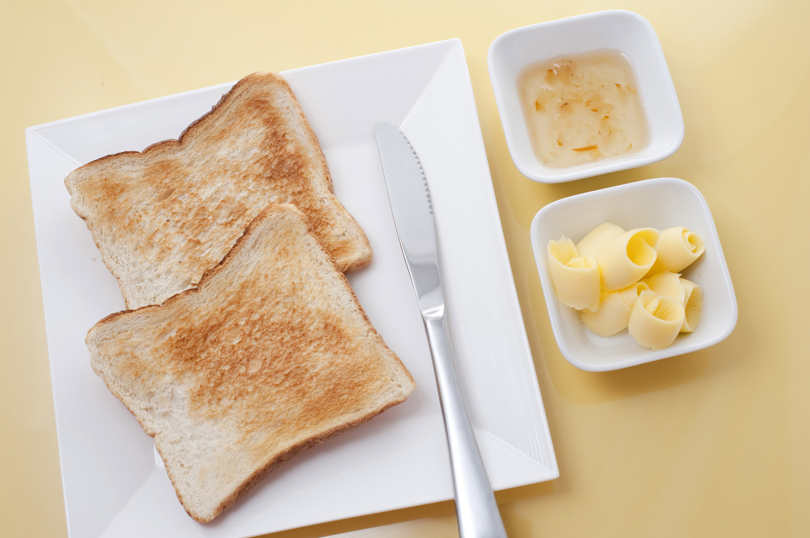

Toast

Description
Toast is a quick and simple breakfast. It can be combined with lots of other foods to create a more complex meal, or stand on its own.
Ingredients and Equipment
Steps
- Put a slice of bread into the toaster.
- Choose a medium heat setting, and depress the button to start the toaster.
- Wait for the toaster to pop up the bread, indicating it has finished.
- Enjoy!